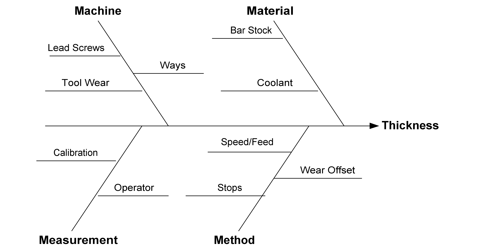

|
3.
Production
Process Characterization
3.5. Case Studies 3.5.2. Machine Screw Case Study
|
|||
| Introduction | A machine shop has three automatic screw machines that produce various parts. The shop has enough capital to replace one of the machines. The quality control department has been asked to conduct a study and make a recommendation as to which machine should be replaced. It was decided to monitor one of the most commonly produced parts (an 1/8th inch diameter pin) on each of the machines and see which machine is the least stable. | ||
| Goal | The goal of this study is to determine which machine is least stable in manufacturing a steel pin with a diameter of .125 +/- .003 inches. Stability will be measured in terms of a constant variance about a constant mean. If all machines are stable, the decision will be based on process variability and throughput. Namely, the machine with the highest variability and lowest throughput will be selected for replacement. | ||
| Software | The analyses used in this case study can be generated using both Dataplot code and R code. | ||
| Process Model | The process model for this operation is trivial and need not be addressed. | ||
| Sensitivity Model | The sensitivity model, however, is important and is given in the figure below. The material is not very important. All machines will receive barstock from the same source and the coolant will be the same. The method is important. Each machine is slightly different and the operator must make adjustments to the speed (how fast the part rotates), feed (how quickly the cut is made) and stops (where cuts are finished) for each machine. The same operator will be running all three machines simultaneously. Measurement is not too important. An experienced QC engineer will be collecting the samples and making the measurements. Finally, the machine condition is really what this study is all about. The wear on the ways and the lead screws will largely determine the stability of the machining process. Also, tool wear is important. The same type of tool inserts will be used on all three machines. The tool insert wear will be monitored by the operator and they will be changed as needed. | ||
|  |
| Sampling Plan |
Given our goal statement and process modeling, we can now define a
sampling plan. The primary goal is to determine if the process is
stable and to compare the variances of the three machines. We also
need to monitor throughput so that we can compare the productivity
of the three machines.
There is an upcoming three-day run of the particular part of interest, so this study will be conducted on that run. There is a suspected time-of-day effect that we must account for. It is sometimes the case that the machines do not perform as well in the morning, when they are first started up, as they do later in the day. To account for this we will sample parts in the morning and in the afternoon. So as not to impact other QC operations too severely, it was decided to sample 10 parts, twice a day, for three days from each of the three machines. Daily throughput will be recorded as well. We are expecting readings around .125 +/- .003 inches. The parts will be measured using a standard micrometer with readings recorded to 0.0001 of an inch. Throughput will be measured by reading the part counters on the machines at the end of each day. |
| Data |
The following are the data that were collected for this study.
MACHINE DAY TIME SAMPLE DIAMETER
(1-3) (1-3) 1 = AM (1-10) (inches)
2 = PM
------------------------------------------------------
1 1 1 1 0.1247
1 1 1 2 0.1264
1 1 1 3 0.1252
1 1 1 4 0.1253
1 1 1 5 0.1263
1 1 1 6 0.1251
1 1 1 7 0.1254
1 1 1 8 0.1239
1 1 1 9 0.1235
1 1 1 10 0.1257
1 1 2 1 0.1271
1 1 2 2 0.1253
1 1 2 3 0.1265
1 1 2 4 0.1254
1 1 2 5 0.1243
1 1 2 6 0.124
1 1 2 7 0.1246
1 1 2 8 0.1244
1 1 2 9 0.1271
1 1 2 10 0.1241
1 2 1 1 0.1251
1 2 1 2 0.1238
1 2 1 3 0.1255
1 2 1 4 0.1234
1 2 1 5 0.1235
1 2 1 6 0.1266
1 2 1 7 0.125
1 2 1 8 0.1246
1 2 1 9 0.1243
1 2 1 10 0.1248
1 2 2 1 0.1248
1 2 2 2 0.1235
1 2 2 3 0.1243
1 2 2 4 0.1265
1 2 2 5 0.127
1 2 2 6 0.1229
1 2 2 7 0.125
1 2 2 8 0.1248
1 2 2 9 0.1252
1 2 2 10 0.1243
1 3 1 1 0.1255
1 3 1 2 0.1237
1 3 1 3 0.1235
1 3 1 4 0.1264
1 3 1 5 0.1239
1 3 1 6 0.1266
1 3 1 7 0.1242
1 3 1 8 0.1231
1 3 1 9 0.1232
1 3 1 10 0.1244
1 3 2 1 0.1233
1 3 2 2 0.1237
1 3 2 3 0.1244
1 3 2 4 0.1254
1 3 2 5 0.1247
1 3 2 6 0.1254
1 3 2 7 0.1258
1 3 2 8 0.126
1 3 2 9 0.1235
1 3 2 10 0.1273
2 1 1 1 0.1239
2 1 1 2 0.1239
2 1 1 3 0.1239
2 1 1 4 0.1231
2 1 1 5 0.1221
2 1 1 6 0.1216
2 1 1 7 0.1233
2 1 1 8 0.1228
2 1 1 9 0.1227
2 1 1 10 0.1229
2 1 2 1 0.122
2 1 2 2 0.1239
2 1 2 3 0.1237
2 1 2 4 0.1216
2 1 2 5 0.1235
2 1 2 6 0.124
2 1 2 7 0.1224
2 1 2 8 0.1236
2 1 2 9 0.1236
2 1 2 10 0.1217
2 2 1 1 0.1247
2 2 1 2 0.122
2 2 1 3 0.1218
2 2 1 4 0.1237
2 2 1 5 0.1234
2 2 1 6 0.1229
2 2 1 7 0.1235
2 2 1 8 0.1237
2 2 1 9 0.1224
2 2 1 10 0.1224
2 2 2 1 0.1239
2 2 2 2 0.1226
2 2 2 3 0.1224
2 2 2 4 0.1239
2 2 2 5 0.1237
2 2 2 6 0.1227
2 2 2 7 0.1218
2 2 2 8 0.122
2 2 2 9 0.1231
2 2 2 10 0.1244
2 3 1 1 0.1219
2 3 1 2 0.1243
2 3 1 3 0.1231
2 3 1 4 0.1223
2 3 1 5 0.1218
2 3 1 6 0.1218
2 3 1 7 0.1225
2 3 1 8 0.1238
2 3 1 9 0.1244
2 3 1 10 0.1236
2 3 2 1 0.1231
2 3 2 2 0.1223
2 3 2 3 0.1241
2 3 2 4 0.1215
2 3 2 5 0.1221
2 3 2 6 0.1236
2 3 2 7 0.1229
2 3 2 8 0.1205
2 3 2 9 0.1241
2 3 2 10 0.1232
3 1 1 1 0.1255
3 1 1 2 0.1215
3 1 1 3 0.1219
3 1 1 4 0.1253
3 1 1 5 0.1232
3 1 1 6 0.1266
3 1 1 7 0.1271
3 1 1 8 0.1209
3 1 1 9 0.1212
3 1 1 10 0.1249
3 1 2 1 0.1228
3 1 2 2 0.126
3 1 2 3 0.1242
3 1 2 4 0.1236
3 1 2 5 0.1248
3 1 2 6 0.1243
3 1 2 7 0.126
3 1 2 8 0.1231
3 1 2 9 0.1234
3 1 2 10 0.1246
3 2 1 1 0.1207
3 2 1 2 0.1279
3 2 1 3 0.1268
3 2 1 4 0.1222
3 2 1 5 0.1244
3 2 1 6 0.1225
3 2 1 7 0.1234
3 2 1 8 0.1244
3 2 1 9 0.1207
3 2 1 10 0.1264
3 2 2 1 0.1224
3 2 2 2 0.1254
3 2 2 3 0.1237
3 2 2 4 0.1254
3 2 2 5 0.1269
3 2 2 6 0.1236
3 2 2 7 0.1248
3 2 2 8 0.1253
3 2 2 9 0.1252
3 2 2 10 0.1237
3 3 1 1 0.1217
3 3 1 2 0.122
3 3 1 3 0.1227
3 3 1 4 0.1202
3 3 1 5 0.127
3 3 1 6 0.1224
3 3 1 7 0.1219
3 3 1 8 0.1266
3 3 1 9 0.1254
3 3 1 10 0.1258
3 3 2 1 0.1236
3 3 2 2 0.1247
3 3 2 3 0.124
3 3 2 4 0.1235
3 3 2 5 0.124
3 3 2 6 0.1217
3 3 2 7 0.1235
3 3 2 8 0.1242
3 3 2 9 0.1247
3 3 2 10 0.125
|